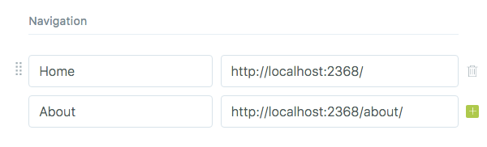
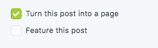
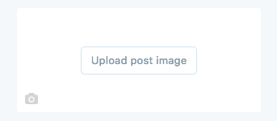
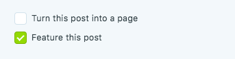
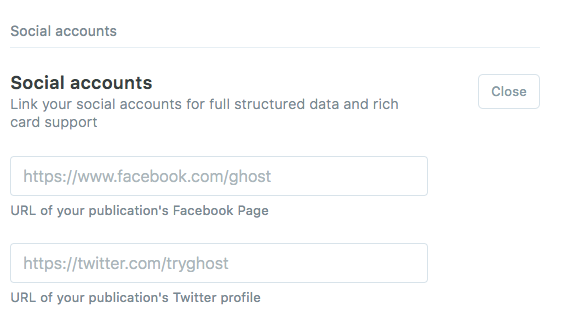

A. Theme Information
- Name: Horace
- Description: A simple single-author Ghost theme for writers and bloggers.
- Current Version: 1.0.0
- Released: 07/02/2018
- Creator: JustGoodThemes.com
- Ghost version: 1.20.0
B. Theme Structure
Here's an overview of the theme file structure.
.
├── /assets
├── /css
├── style.css
├── /fonts
├── fontawesome.eot
├── fontawesome.svg
├── fontawesome.ttf
├── fontawesome.woff
├── /images
├── /js
├── custom.js
├── jquery-3.3.1.min.js
├── plugins.js
├── /sass
├── _variables.scss
├── style.scss
├── screenshot-desktop.jpg
├── screenshot-mobile.jpg
├── /partials
├── comments.hbs
├── footer.hbs
├── header.hbs
├── loop-archive.hbs
├── loop.hbs
├── navigation.hbs
├── newsletter-box.hbs
├── pagination.hbs
├── sidebar.hbs
├── social-links.hbs
├── widget-about.hbs
├── widget-newsletter.hbs
├── widget-recent.hbs
├── widget-tagcloud.hbs
├── author.hbs
├── default.hbs
├── home.hbs
├── index.hbs
├── package.json
├── page.hbs
├── post.hbs
├── tag.hbsC. How to Upload a Theme to Your Ghost Blog - top
1. Upload Through Admin
- Log into the admin section of your Ghost blog:
yourblog.com/ghost. - Click on Design under Settings in the left hand column and scroll to the very bottom.
- Click on Upload a theme.
- Drag-and-drop or click and locate the zip file for your theme.
- Once it is uploaded, click on either Activate Now to activate the theme immediately or Close if you want to activate later on.
2. Upload Manually
- Locate the theme directory within the download files. It can be found at theme/horace.
- Login to FTP/SFTP of your blog, or the file browser of your provided hosting service.
- Navigate to the /content/themes directory within your Ghost installation.
- Upload the horace directory found in step one into the remote /content/themes directory.
- Restart your Ghost service. The process for this will change dependent on your provider. If you are unaware how to restart the service please raise a support issue with your host.
- Log into the admin section of your Ghost blog:
yourblog.com/ghost. - Click on Design under Settings in the left hand column and scroll to the very bottom.
- Click on Activate next to the theme you want to activate and it will be activated.
D. Theme Features - top
1. Favicon
To add a favicon, navigate to Settings → General in your Ghost blog admin dashboard and click Upload Image next to Publication icon.
2. Navigation
You can add, edit, delete and reorder menu links on your Ghost blog, directly from the navigation tool within the blog admin area, located at Settings → Design.
To add a menu item to your navigation menu, enter a label for the menu item in the label field and the destination for the menu item to link to in the URL field.

Once you have organized your menu, click Save.
3. Static Pages
In order to create a static page you create a new post, just like you would any other post. Once you have opened up the new post, open the Post Settings Menu by clicking on the gear icon in the top right corner. Check the box to "Turn this post into a page". This will convert your post to a static page.

4. Post Cover Images
You can add cover images to all of your posts and static pages. Open Post Settings Menu by clicking on the gear icon in the top right corner of the Ghost editor, drag and drop or locate the image on your computer, save it and you're all set.

5. Hero Section
The hero section is displayed on the homepage of your blog. By default, the author avatar, welcome title, text and social links are displayed. If the publication cover image is added, it is used as a background for the hero section.
To add the publication cover image, navigate to Settings → General and click Upload Image next to Publication cover.
To edit the welcome title and text, open the home.hbs file located in the main theme folder (Ghost/content/themes/horace) and adjust the markup on lines 25-26.
To adjust the social links, follow the guidelines outlined below.
6. Featured Posts
If you have any posts marked as featured, they will appear on the homepage below the hero section. To mark a post as featured, open the post settings menu by clicking on the gear icon in the top right corner and check the "Feature this post" box.

Important! You need to enable Public API to display featured posts. To do this navigate to Settings → Labs in your Ghost admin dashboard and check the "Public API" box.
7. Subscribers
The Subscribers feature allows you to capture email addresses on your blog, which can then be exported and imported. If the "Subscribers" feature is enabled, the subscription form is displayed below the content and the optional newsletter subscription widget is displayed in the theme sidebar.
Important! You need to enable the Subscribers feature in Settings → Labs in your Ghost admin dashboard by checking the "Subscribers" box.
8. Syntax Highlighter
Horace comes with the Prism syntax highlighter to automatically highlight code blocks in your posts. To make the syntax highlighter work, wrap your code in <pre> and <code> elements and define the code language by adding a language-xxxx class to the <code> element:
<pre><code class="language-css">p { color: red }</code></pre>By default, the supported languages include: markup, CSS, C-like, JavaScript. If you need to support more languages, visit http://prismjs.com/download.html, select the languages you need and download the JS file. Replace the Prism code on lines 9-15 in the plugins.js file located in the assets/js folder (Ghost/content/themes/horace/assets/js) of the theme with the contents of the file you downloaded.
9. Image Styles
When adding images to your posts and pages, you can add a #hash value to the end of the source URL to create a more attractive flow of content.
For instance, you can align your image left or right, by adding a #left or #right value to the end the end of the source URL like this:
You can also make your image wider than the content by adding a #wide value to the end the end of the source URL like this:
10. Disqus Comments
Horace theme comes with Disqus commenting built-in, you just need to have a Disqus account. To enable commenting, you need to change the default Disqus account shortname my_disqus_shortname on line 21 in the comments.hbs partial located in the partials folder (Ghost/content/themes/horace/partials) of the theme.
s.src = 'https://my_disqus_shortname.disqus.com/embed.js';If you wish to disable commenting, just remove the following lines from the post.hbs file located in the main theme folder:
{{!-- The tag below includes the theme comments - partials/comments.hbs --}}
{{> comments}}11. Sidebar
The theme sidebar contains the site navigation menu for small screens and several optional widgets. You can change the order of the widgets or delete unnecessary by editing the sidebar.hbs file located in the partials folder (Ghost/content/themes/horace/partials) of the theme.
About Widget
You can edit the About Widget information in the widget-about.hbs file located in the partials folder (Ghost/content/themes/horace/partials) of the theme. If you do not need this widget, simply delete the following lines
{{!-- Includes the about widget - partials/widget-about.hbs --}}
{{> "widget-about"}}from the sidebar.hbs file located in the partials folder (Ghost/content/themes/horace/partials) of the theme.
Recent Posts Widget
The widget displays 3 latest posts by default, but you can alter the number of posts on line 4 in the widget-recent.hbs file located in the partials folder (Ghost/content/themes/horace/partials) of the theme:
{{#get "posts" limit="3" as |recent_posts|}}If you do not want to display this widget, simply delete the following lines
{{!-- Includes the recent posts widget - partials/widget-recent.hbs --}}
{{> "widget-recent"}}from the sidebar.hbs file located in the partials folder (Ghost/content/themes/horace/partials) of the theme.
Important! You need to enable Public API to display the recent posts widget. To do this navigate to Settings → Labs in your Ghost admin dashboard and check the "Public API" box.
Tag Cloud Widget
The widget displays all blog tags ordered by posts number. You can change the order of tags or limit their number on line 5 in the widget-tagcloud.hbs file located in the partials folder (Ghost/content/themes/horace/partials) of the theme:
{{#get "tags" limit="all" include="count.posts" order="count.posts desc"}}If you do not want to display this widget, simply delete the following lines
{{!-- Includes the tagcloud widget - partials/widget-tagcloud.hbs --}}
{{> "widget-tagcloud"}}from the sidebar.hbs file located in the partials folder (Ghost/content/themes/horace/partials) of the theme.
Important! You need to enable Public API to display the tag cloud widget. To do this navigate to Settings → Labs in your Ghost admin dashboard and check the "Public API" box.
Newsletter Widget
If you have enabled the "Subscribers" feature in labs, Ghost newsletter subscription widget is displayed in the sidebar.
You can edit the Newsletter Widget information in the widget-newsletter.hbs file located in the partials folder (Ghost/content/themes/horace/partials) of the theme. If you do not need this widget, simply delete the following lines
{{!-- Includes the newsletter widget - partials/widget-newsletter.hbs --}}
{{> "widget-newsletter"}}from the sidebar.hbs file located in the partials folder (Ghost/content/themes/horace/partials) of the theme.
12. Social Media Links
The social media links are displayed in the hero section on the homepage and in the footer of the theme.
To add Facebook and Twitter links, navigate to Settings → General, click Expand next to Social accounts and enter the URLs of your Facebook and Twitter profiles.

All other social media links can be altered within the social-links.hbs partial located in the partials folder (Ghost/content/themes/horace/partials) of the theme.
You may use any of the following social icons:
13. Copyright Information
You can edit the copyright information on line 8 in the footer.hbs file within the partials folder (Ghost/content/themes/horace/partials) of the theme.
14. Google Analytics
First, you need to create a Google Account. If you already have one, you should be able to sign into Google Analytics using your existing Google Account credentials.
Once you've logged into Google Analytics, follow their guide to create an account for your blog. Once the account has been created, you'll receive a tracking code. Copy your tracking code and head over to your Ghost blog admin dashboard. Navigate to Settings → Code Injection and paste your tracking code into the Blog Header field.
Or you can paste your tracking code inside the <head> element in the default.hbs file located in the main theme folder, right below the {{ghost_head}} and above </head>.
E. Credits - top
- Karla font: https://fonts.google.com/specimen/Karla
- Font Awesome icons: https://fontawesome.com/
- FitVids plugin: http://fitvidsjs.com/
- Prism plugin: http://prismjs.com/
F. Support - top
The documentation included provides all the information needed to get the theme installed and customized. However, if you have any questions you can email us at justgoodthemes.com, and we will be happy to help you.
If you have any bug reports, or feature requests, please let us know!
G. Updates - top
As Ghost platform grows, so will this theme. We’re dedicated to keeping our Horace up to date.